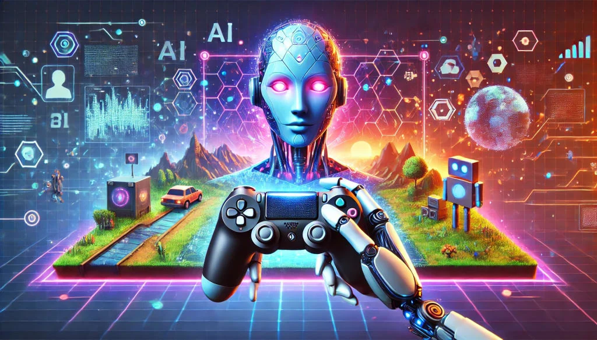

How Can AI Help Us with Game Designing?
Contents
- AI Won't Design Your Game — But It Will Change How You Do It
- Introduction
- Where AI Actually Helps
- 1. Rapid Prototyping: Reducing the Cost of Ideas
- 2. Content Generation: From Inspiration to Raw Material
- 3. Tooling and Pipelines: The Real Impact of AI
- Where AI Falls Short
- 1. Lack of System-Level Thinking
- 2. No Real Understanding of Player Experience
- 3. Hallucination and Engineering Risk
- The Future: AI as a Co-Designer
- 1. AI as a Creative Partner
- 2. AI-Driven Workflows
- Conclusion

AI Won't Design Your Game — But It Will Change How You Do It
Introduction
Over the past year, while working on Unity projects and building gameplay systems, I started to notice a growing gap between design ideas and implementation reality. Game design is not just about creativity—it is about iteration, system balancing, and constant testing.
At the same time, AI tools have rapidly evolved. From generating code to creating art assets, it seems like AI can “do everything.” This naturally raises a question:
Can AI actually help us design games?
The short answer is: yes—but not in the way most people expect.
AI is not replacing game designers. Instead, it is fundamentally reshaping how game design is done—especially in prototyping, content creation, and tool development.
Where AI Actually Helps
1. Rapid Prototyping: Reducing the Cost of Ideas
Game design is inherently iterative. Most ideas don’t work the first time—they need to be tested, adjusted, and sometimes discarded entirely.
This is where AI shines.
AI can:
Generate basic gameplay scripts
Suggest system structures
Help implement quick UI or interaction prototypes
In my own workflow, especially when experimenting with small gameplay mechanics, AI significantly reduces the time needed to go from idea → playable prototype. Instead of spending hours writing boilerplate code, I can focus on testing whether the idea itself is fun.
AI reduces the cost of iteration, which is the core of game design.
This is not about replacing developers—it’s about accelerating exploration.
2. Content Generation: From Inspiration to Raw Material
AI is also powerful in generating creative content:
Character concepts
Dialogue drafts
Environment ideas
Visual references
However, one important reality is often overlooked:
Raw AI-generated content is not production-ready.
In real game pipelines, assets must go through structured processes—whether it’s proper material setup (e.g., PBR workflows), animation integration, or performance optimization.
AI outputs are best treated as:
Inspiration
Drafts
Intermediate materials
For example, an AI-generated environment concept might guide level design, but it still requires human decisions to ensure gameplay clarity, navigation, and performance.
AI helps you start faster—but finishing still requires design thinking.
3. Tooling and Pipelines: The Real Impact of AI
From my experience, the most meaningful impact of AI in game design is not in generating content—but in enhancing tools.
In my previous work, I built:
GM debugging tools
Gameplay configuration systems
A path editor for level design
These tools significantly improved iteration speed for designers and developers.
Now imagine integrating AI into this workflow:
AI-assisted level editing
Automated parameter tuning
Smart debugging suggestions
Natural language → in-engine actions
However, there is a critical engineering principle:
AI should not directly control the game engine. It should operate through a structured middleware layer.
Instead of letting AI manipulate low-level systems, we can:
Let AI output high-level intentions
Let the engine handle execution
This aligns with modern AI integration practices, where systems use abstraction layers to ensure stability and prevent unpredictable behavior.
In other words, AI becomes a tool for designers, not a replacement for the engine.
Where AI Falls Short
1. Lack of System-Level Thinking
Game design is not just about isolated features—it is about systems:
Feedback loops
Balance between mechanics
Player progression
AI can generate individual ideas, but it often struggles to understand how systems interact over time.
For example:
A combat mechanic may seem interesting in isolation
But it might break pacing, difficulty, or resource balance
These are system-level decisions that require holistic thinking—something AI currently lacks.
2. No Real Understanding of Player Experience
Through my own project experience, especially in narrative-driven games, I realized that designing a system and creating a good player experience are very different challenges.
AI does not:
Feel tension
Understand pacing
Experience frustration or satisfaction
It cannot truly answer:
“Is this fun?”
“Does this moment feel meaningful?”
These are human-centered questions.
AI can assist in building systems—but it cannot evaluate emotional impact.
3. Hallucination and Engineering Risk
Another major limitation is reliability.
AI can:
Generate incorrect logic
Misuse engine APIs
Produce inconsistent results
In complex systems like Unity or Unreal, this becomes a real engineering risk.
To make AI usable in production, we must constrain it with:
Structured systems (e.g., ECS, state machines)
Clear data flows
Validation layers
Modern approaches emphasize making AI outputs traceable and controllable, rather than treating them as black-box solutions.
Without these constraints, AI becomes more dangerous than helpful.
The Future: AI as a Co-Designer
Looking forward, AI will not replace designers—but it will redefine the design process.
1. AI as a Creative Partner
The future workflow may look like this:
Designers define goals and constraints
AI generates variations and suggestions
Designers evaluate and refine
AI becomes a co-designer—not an autonomous creator.
2. AI-Driven Workflows
We are already seeing early forms of this in advanced pipelines:
Task-based AI systems
State-driven decision models
Automated testing and iteration loops
These approaches focus on:
Making AI decisions transparent
Structuring outputs
Integrating with existing game systems
This is not about replacing creativity—it’s about scaling it.
Conclusion
AI is often presented as a revolutionary force that will “design games for us.” In reality, its role is much more practical—and much more interesting.
AI helps us:
Prototype faster
Generate ideas
Build better tools
But it cannot:
Understand systems deeply
Feel player experience
Make final design decisions
AI will not replace game designers—but designers who use AI will replace those who don’t.
The future of game design is not human vs AI.
It is human + AI, working together to create better, faster, and more meaningful experiences.